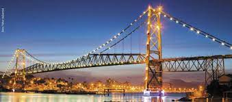

ACRE 1
Rio Branco é um município brasileiro, capital do estado do Acre, na Região Norte do país e principal centro financeiro, corporativo, político e cultural do estado. Sendo a capital mais ocidental do Brasil, a 3 030 quilômetros de distância de Brasília, capital federal, Rio Branco localiza-se às margens do Rio Acre.
ALAGOAS 2
Maceió, é a capital do estado de Alagoas, na costa leste do Brasil. O seu centro histórico alberga casas coloniais cor de pastel, uma catedral do século XIX e o Museu Théo Brandão de Antropologia e Folclore, localizado numa mansão renovada à beira-mar. Protegida por um recife, a costa tem inúmeras praias de areia branca. A Praia de Ponta Verde oferece um passeio repleto de palmeiras, quiosques na praia e desportos aquáticos.
AMAPÁ 3
Macapá é um município brasileiro, capital do estado do Amapá, Região Norte do país. Sua população estimada em 2019 é de 503 327 habitantes, sendo o 51° município mais populoso do Brasil e o quinto da Região Norte.
AMAZONAS 4
Manaus, nos bancos do Rio Negro no noroeste do Brasil, é a capital do vasto estado do Amazonas. Trata-sede um ponto de partida importante próximo à Floresta Amazônica. A leste da cidade, o Rio Negro escuro,converge para o Rio Solimões, barrento, resultando em um fenômeno visual incrível chamado de "Encontro das Águas". A combinação dos afluentes forma o Rio Amazonas.
BAHIA 5

Salvador, a capital do estado da Bahia no nordeste do Brasil, é conhecida pela arquitetura colonial portuguesa, pela cultura afrobrasileira e pelo litoral tropical. O bairro do Pelourinho é seu coração histórico, com vielas de paralelepípedo terminando em praças grandes, prédios coloridos e igrejas barrocas, como São Francisco, com trabalhos em madeira revestidos com ouro.
CEARÁ 6

Fortaleza é a capital do estado do Ceará, no Nordeste brasileiro. A cidade é conhecida por suas praias, com falésias vermelhas, palmeiras, dunas e lagoas. As tradições folclóricas da cidade podem ser vistas em apresentações de dança no Theatro José de Alencar, construção em estilo art nouveau inaugurada em 1910. Outro destaque arquitetônico é a Catedral Metropolitana, em estilo neogótico
ESPÍRITO SANTOS 7

Vitória é a capital do estado de Espírito Santo, no sudeste do Brasil. É conhecida pelas praias arenosas como Camburi e Curva da Jurema. O centro da cidade inclui a Catedral Metropolitana do século XX, com vitrais. Nas proximidades, a degradada Capela de Santa Luzia data do século XVI. Junto ao rio de Santa Maria encontra-se o grande Palácio Anchieta, sede do governo do estado.
GOIÁS 8
Goiana é um município brasileiro do estado de Pernambuco, Região Nordeste do país. Encontra-se localizado no extremo norte da Região Metropolitana do Recife, fazendo divisa com a Região Metropolitana de João Pessoa. Está situado no litoral, a 62 km do Recife, 51 km da capital paraibana e 2 187 km de Brasília.
MATO GROSSO 9
Cuiabá é uma cidade nas margens do rio Cuiabá e capital do estado de Mato Grosso, no centro do Brasil. É conhecida como a porta de entrada para as zonas húmidas do Pantanal do Norte. A arquitetura colonial e a Praça da República, repleta de árvores, ficam no centro, juntamente com as torres do relógio da moderna Catedral de Bom Jesus. No Museu Histórico de Mato Grosso, nas proximidades, pinturas e modelos retratam a história e as batalhas da região.
MATO GROSSO DO SUL 10
Campo Grande é um município brasileiro da região Centro-Oeste, capital do estado de Mato Grosso do Sul. Reduto histórico de divisionistas entre o sul e o norte, Campo Grande foi fundada por mineiros, que vieram aproveitar os campos de pastagens nativas e as águas cristalinas da região dos cerrados.
MINAS GERAIS 11
Belo Horizonte é a capital do estado de Minas Gerais, no sudeste do Brasil. Rodeada de montanhas, a cidade é conhecida pelo enorme Estádio Mineirão. Construído em 1965, o estádio alberga também o Museu Brasileiro do Futebol. Nas proximidades encontra-se a Lagoa da Pampulha e o Conjunto Arquitetónico da Pampulha, que inclui a Igreja de São Francisco de Assis, cujo teto é ondulado e que foi concebida pelo arquiteto modernista brasileiro Oscar Niemeyer.
SÃO PAULO 12

São Paulo, centro financeiro do Brasil, está entre as cidades mais populosas do mundo, com diversas instituições culturais e uma rica tradição arquitetônica. Há prédios simbólicos como a catedral neogótica, o Edifício Martinelli, um arranha-céu inaugurado em 1929, e o Edifício Copan, com suas linhas curvas projetadas pelo arquiteto modernista Oscar Niemeyer. A igreja em estilo colonial do Pátio do Colégio marca o local onde os padres jesuítas fundaram a cidade em 1554
PARÁ 13
Belém, capital do estado de Pará, é uma cidade portuária e a porta de entrada para a região do Baixo Amazonas do Brasil. Junto à Baía do Guajará, o bairro da Cidade Velha à beira-rio preserva a arquitetura colonial portuguesa, das igrejas e casas com azulejos coloridos a uma fortificação do século XVII conhecida como Forte do Castelo. Ver-o-Peso é um amplo mercado ao ar livre junto à água, onde se vende peixe, fruta e artesanato da Amazónia.
PARAIBA 14
oão Pessoa é uma cidade costeira próxima da foz do rio Paraíba, no leste do Brasil. A sua cidade velha é conhecida pela arquitetura barroca e art nouveau. A igreja de São Francisco, do século XVI, tem azulejos portugueses pintados no pátio e uma capela ornamentada com ouro. As praias de Tambaú e Cabo Branco estão repletas de bares e discotecas, além de lojas que vendem artesanato local de madeira e cerâmica.
PARANÁ 15
Curitiba é a capital do estado do Paraná, na região sul do Brasil. A Torre Panorâmica, que tem um observatório em sua parte superior, destaca-se na silhueta da cidade. Conhecida como centro cultural, Curitiba abriga vários espaços para apresentações, como a Ópera de Arame, uma estrutura de aço tubular com telhado transparente, e o enorme Centro Cultural Teatro Guaíra, que apresenta uma programação variada.
Pernambuco 16
Recife, a capital do estado de Pernambuco, no nordeste do Brasil, distingue-se pelos seus vários rios, pontes, ilhéus e penínsulas. Recife Antigo, na própria ilha junto ao porto, é o centro histórico da cidade antiga que data do século XVI. A sul, a popular Praia de Boa Viagem é protegida por recifes e está ladeada de blocos de apartamentos elevados, hotéis modernos e restaurantes.
Piaiuí 17
Teresina é um município brasileiro, capital do estado do Piauí e a única capital da Região Nordeste que não se localiza no litoral, distando 343 km do Oceano Atlântico. Com uma população estimada em 868 075 habitantes em 2020, é a cidade mais populosa do Piauí
Rio de Janeiro 18

O Rio de Janeiro é uma grande cidade brasileira à beira-mar, famosa pelas praias de Copacabana e Ipanema, pela estátua de 38 metros de altura do Cristo Redentor, no topo do Corcovado, e pelo Pão de Açúcar, um pico de granito com teleféricos até seu cume. A cidade também é conhecida pelas grandes favelas. O empolgante Carnaval, com carros alegóricos, fantasias extravagantes e sambistas, é considerado o maior do mundo.
Rio Grande do norte 19
Natal é a capital do estado de Rio Grande do Norte, na extremidade nordeste do Brasil. É conhecida pelas extensas dunas de areia costeiras e pelo Forte dos Reis Magos, em forma de estrela, uma fortaleza portuguesa do século XVI na foz do rio Potengi. A norte do rio, Genipabu é uma área de enormes dunas com uma lagoa de água doce. A autoestrada Via Costeira liga uma faixa de 15 km de praias a sul do forte.
Rio Grande do Sul 20
Porto Alegre é a capital do estado de Rio Grande do Sul, no sul do Brasil. Na praça principal, a Praça Marechal Deodoro, encontra-se a Catedral Metropolitana, de estilo renascentista, com murais religiosos no exterior. O Palácio Piratini, de estilo neoclássico, é a sede do governo estadual. O Theatro São Pedro, do século XIX, fica nas proximidades. A cidade é conhecida como uma porta de entrada para os enormes desfiladeiros do Parque Nacional de Aparados da Serra.
Rondonia 21
Porto Velho é um município brasileiro e a capital do estado de Rondônia. Com uma população de 539 354 habitantes, conforme estimativas do Instituto Brasileiro de Geografia e Estatística, é o município mais populoso de Rondônia e o terceiro mais populoso da Região Norte, atrás apenas de Manaus, Belém.
Roraima 22
Boa Vista é um município brasileiro e capital do estado de Roraima, Região Norte do país. Concentrando cerca de dois terços dos habitantes do estado, situa-se na margem direita do rio Branco. Sua população, de acordo com estimativas do Instituto Brasileiro de Geografia e Estatística, era de 419 652 habitantes em 2020.
Santa Catarina 23
Florianópolis, a capital do estado de Santa Catarina no sul do Brasil, é maioritariamente constituída pela Ilha de Santa Catarina, com 54 km de comprimento. É famosa pelas suas praias, incluindo estâncias turísticas populares como a Praia dos Ingleses na extremidade norte da ilha. A sua Lagoa da Conceição, uma lagoa de água salgada, é popular para a prática de windsurf e para excursões de barco. A Ponte Pedro Ivo Campos faz a ligação entre a ilha e a zona comercial continental.
Sergipe 24
Aracaju é a capital do estado de Sergipe, na costa nordeste do Brasil. É conhecida pelas praias, incluindo a Praia de Atalaia, ao centro. Junto à praia, o Oceanário de Aracaju, em forma de tartaruga, possui arraias, tubarões, enguias e tartarugas marinhas, além de exposições práticas. O passeio na marginal, a Passarela do Caranguejo, está repleta de restaurantes de peixe e marisco e é marcada por uma enorme escultura de um caranguejo.
Tocantis 25
Palmas é um município brasileiro, capital e também a maior cidade do estado do Tocantins. A cidade foi fundada em 20 de maio de 1989, logo após a criação do Tocantins pela Constituição de 1988.
Distrito Federal 26
Brasília, inaugurada como capital do Brasil em 1960, é uma cidade planeada que se distingue pela sua arquitetura branca e moderna, essencialmente concebida por Oscar Niemeyer. Disposta em forma de avião, a sua "fuselagem" é o Eixo Monumental, 2 avenidas amplas flanqueadas por um enorme parque. No "cockpit" encontra-se a Praça dos Três Poderes, cujo nome provém das 3 agências do governo que a rodeiam.
maranhão 27
São Luís é uma cidade no nordeste do Brasil, na ilha de São Luís, no Oceano Atlântico. No centro histórico da cidade encontra-se o bairro de Praia Grande, na área circundante da rua de Portugal, marcado por edifícios coloniais com azulejos distintos e varandas em ferro fundido. O Palácio dos Leões, onde reside o governador do estado, exibe arte e mobiliário franceses. Nas proximidades, encontra.se o grande Palácio La Ravardière, do século XVII.